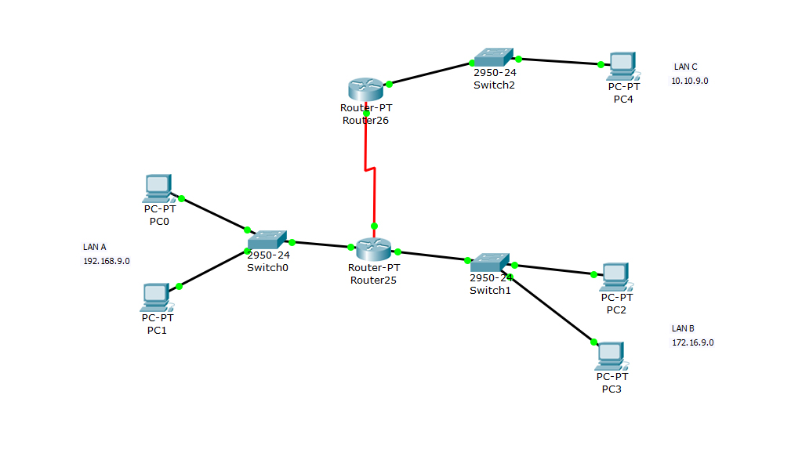
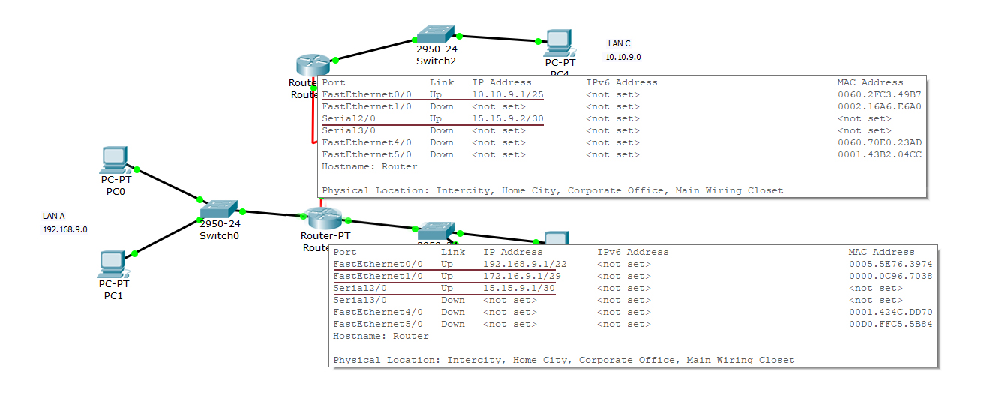
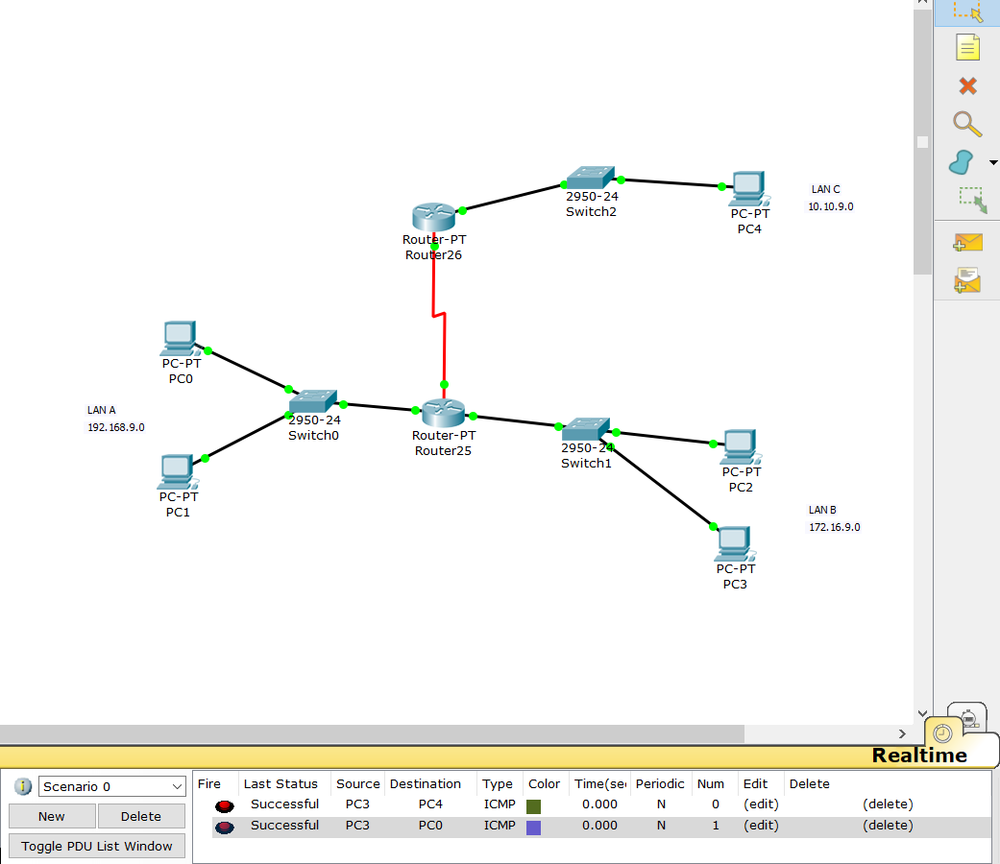
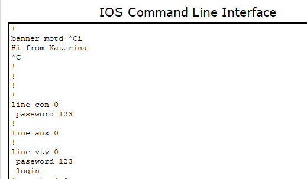

В процессе лабораторной работы были поставлены и решены следующие задачи:
В продукте Cisco Packet Tracer разместить компьютеры и коммутаторы, образующие 3 локальные сети: LAN A, LAN B, LAN C

Настроить адресацию на компьютерах, согласно варианту


Установить между локальными сетями 2 маршрутизатора, настроив интерфесы

Настроить статическую маршрутизацию и проверить работоспособность сети

Установить пароли на привилегированный режим и на подключения через консоль и telnet и установить баннер на сетевое оборудование.
